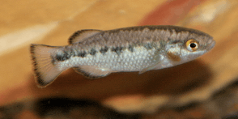

Systématique
- Ordre : Cyprinodontiformes
- Famille : Goodeidae
- Genre : Crenichthys
- Espèce : C. nevadae
- Auteur : Hubbs, 1932

Crenichthys nevadae est un poisson exceptionnel appartenant à la famille des Goodeidae, mais classé dans la sous-famille des Empetrichthyinae. Contrairement aux autres Goodeidés mexicains, il est ovipare. Son corps est trapu, cylindrique à l'avant et comprimé vers l'arrière. Sa coloration est olivâtre à brun foncé sur le dos, s'éclaircissant vers un ventre crème ou argenté, avec deux rangées de taches sombres caractéristiques le long des flancs.
Il atteint une taille de 5 à 7 cm. Une caractéristique morphologique majeure est l'absence totale de nageoires pelviennes, un trait qu'il partage avec le genre Empetrichthys. Sa bouche est terminale avec des dents bicuspides, adaptées à son régime spécialisé dans les sources thermales.
C'est une espèce extrêmement résistante, adaptée à des conditions de vie extrêmes. Il vit dans des sources thermales où l'eau peut atteindre des températures très élevées et où le taux d'oxygène est souvent faible. Son comportement est actif mais non agressif.
En aquarium, Crenichthys nevadae est paisible et peut être maintenu en groupe. Il passe beaucoup de temps à brouter le périphyton sur les roches. Il est capable de tolérer des variations de température importantes, mais nécessite une eau très stable chimiquement. C'est un nageur de fond et de milieu de bac.
Mode : Ovipare (contrairement à la majorité des Goodeidae qui sont vivipares).
Il s'agit d'un reproducteur discret. Les œufs sont déposés sur la végétation ou le substrat. La reproduction en captivité est peu documentée et considérée comme difficile. En milieu naturel, le frai a lieu toute l'année en raison de la stabilité thermique des sources thermales.
L'incubation dure environ 10 à 15 jours selon la température. Les alevins sont petits à la naissance et nécessitent des infusoires ou de la nourriture très fine (poudre) avant de pouvoir accepter des nauplies d'artémias. Il n'y a aucun soin parental après la ponte.
Dimorphisme sexuel : Peu marqué. Les mâles sont généralement un peu plus petits et plus sveltes que les femelles. Pendant la période de reproduction, les mâles peuvent présenter des couleurs légèrement plus intenses. L'absence de nageoires pelviennes rend la distinction visuelle rapide complexe pour un œil non averti.
Espérance de vie : 3 à 5 ans, bien que les données précises en captivité soient rares en raison de sa faible présence dans le hobby.
Crenichthys nevadae est endémique de la vallée de Railroad, dans l'État du Nevada aux États-Unis. Son habitat se limite exclusivement à des sources thermales isolées et leurs chenaux d'écoulement associés.
Ces sources affichent des températures constantes pouvant osciller entre 30 et 38 °C selon les points d'émergence. L'eau est généralement minéralisée. Le substrat est composé de sable, de boue et de dépôts minéraux, avec une présence d'algues thermophiles. L'habitat est extrêmement restreint et fragile, protégé par les lois fédérales américaines.
Répartition

Origine naturelle :
- États-Unis : Endémique du Nevada, Railroad Valley (Sources thermales de Duckwater et Lockes).
- Localité type : Railroad Valley, Nevada, USA.
Statut UICN : Vulnérable (Vulnerable). L'espèce est protégée car elle dépend de quelques sources thermales uniques qui pourraient être menacées par le pompage des eaux souterraines.
Paramètres de maintenance
Température : 25 à 32 °C (Espèce thermophile). Peut tolérer plus mais 28°C est un bon compromis.
pH : 7,5 à 8,5 (eau alcaline).
GH : 10 à 25 °dGH (eau dure).
Courant : Faible.
Volume conseillé : 100 L pour un groupe. Décor minéral avec quelques plantes résistantes à la chaleur.
Régime alimentaire
Régime : Omnivore à tendance alguivore/détritivore.
Il se nourrit principalement d'algues et de petits invertébrés trouvés dans les tapis algaux des sources thermales.
En aquarium, il accepte les aliments secs riches en végétaux (spiruline) et les petites proies congelées. Un apport constant de matière végétale est crucial pour sa santé digestive.